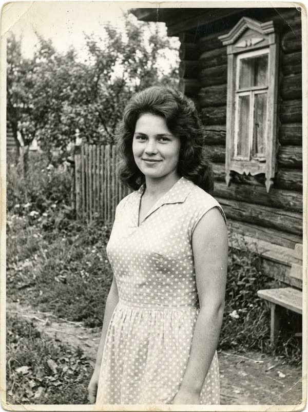
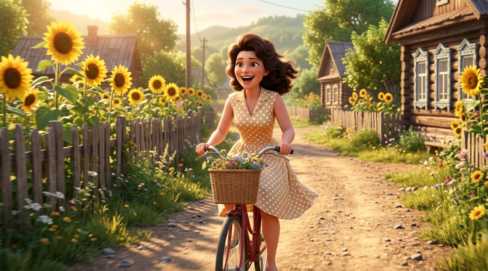

Семейный ИИ-фильм: пример приёма
Сделано сегодня под ваш заказ: старое фото из альбома → новая живая сцена в стиле 3D-мультфильма с тем же лицом. Ниже — план фильма на 3 минуты по хронологии.


План фильма на 3 минуты
- 0:00–0:25Её родители — молодая пара у дома, свадьба, первые годы
- 0:25–0:55Детство — бабушка девочкой: двор, школа, праздник
- 0:55–1:25Юность — прогулки, учёба, работа — из её фото
- 1:25–1:55Встреча с дедушкой — знакомство, свадьба, совместные кадры
- 1:55–2:30Семья — дети, вы маленькая, праздники
- 2:30–3:00Сегодня — современные фото оживают, финальное поздравление
Около 30 сцен. Каждый кадр с лицом — на согласование до анимации. Закадровый голос по вашему тексту, музыка и звук — при сборке.